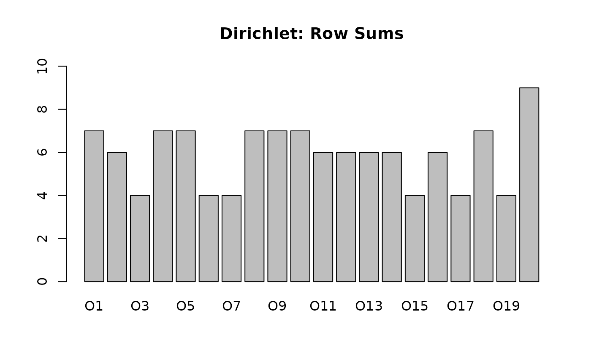

Introduction
Creating synthetic datasets is essential for testing algorithms and validating results in Formal Concept Analysis. However, simple uniform random generation (where every cell has a fixed probability of being 1) often fails to capture the structure of real-world data.
fcaR now implements advanced generation methods,
allowing for more realistic and controllable simulations.
1. Dirichlet Distribution for Realistic Data
Real-world contexts often have “clumpy” or “sparse” rows. Some objects have many attributes, while others have very few. A uniform distribution creates rows that are all roughly the same size (Binomial distribution).
To mimic real variability, we use a Dirichlet Distribution to sample the probability of an object having attributes.
# Uniform Context (Standard)
# All objects have roughly 20% of attributes
fc_uni <- RandomContext(n_objects = 20, n_attributes = 10, density = 0.2, distribution = "uniform")
# Dirichlet Context (Realistic)
# Some objects will be empty, some full, some in between.
# alpha = 0.1 -> High skewness (Very sparse or very dense rows)
# alpha = 1.0 -> Uniform distribution of row sizes
fc_dir <- RandomContext(n_objects = 20, n_attributes = 10, distribution = "dirichlet", alpha = 0.2)
# Compare Row Sums
barplot(rowSums(fc_uni$incidence()), main = "Uniform: Row Sums", ylim = c(0, 10))

2. Randomization via Edge Swapping
When performing statistical analysis on a concept lattice, we often ask: “Is this pattern significant, or could it happen by chance?”.
To answer this, we need to compare our context against a “random null model”. The most robust null model is a random matrix that preserves:
- The number of attributes per object (Row sums).
- The frequency of each attribute (Column sums).
This is achieved by Edge Swapping (also known as the Curveball algorithm). It swaps connections without altering the marginal sums.
data(planets)
fc <- FormalContext$new(planets)
# Original Marginals
orig_col_sums <- colSums(fc$incidence())
print(orig_col_sums)
#> small medium large near far moon no_moon
#> 5 2 2 4 5 7 2
# Randomize using Swap
fc_random <- randomize_context(fc, method = "swap")
# Verify Marginals are preserved
new_col_sums <- colSums(fc_random$incidence())
print(new_col_sums)
#> small medium large near far moon no_moon
#> 5 2 2 4 5 7 2
# But the structure is different
print(all(fc$incidence() == fc_random$incidence()))
#> [1] FALSEThis allows you to generate 1000 randomized versions of your data and check if your concept stability or support is statistically significant.
3. Generating Distributive Lattices
We can also generate random contexts that are mathematically guaranteed to produce a Distributive Concept Lattice. This relies on Birkhoff’s Theorem, which states that the lattice of order ideals of a Poset is distributive.
The function RandomDistributiveContext generates a
random Poset and builds its associated formal context.
# Generate a random distributive context based on a Poset with 15 elements
fc_dist <- RandomDistributiveContext(n_elements = 15, density = 0.2)
fc_dist$find_concepts()
# Verify the mathematical guarantee
print(paste("Is Distributive?", fc_dist$concepts$is_distributive()))
#> [1] "Is Distributive? TRUE"
print(paste("Is Modular?", fc_dist$concepts$is_modular()))
#> [1] "Is Modular? TRUE"This is particularly useful for testing algorithms designed for distributive lattices or for educational purposes.